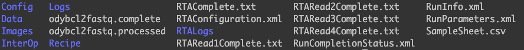

Last updated: 2019-07-30
Checks: 7 0
Knit directory: scRNA-seq-workshop-Fall-2019/
This reproducible R Markdown analysis was created with workflowr (version 1.4.0). The Checks tab describes the reproducibility checks that were applied when the results were created. The Past versions tab lists the development history.
Great! Since the R Markdown file has been committed to the Git repository, you know the exact version of the code that produced these results.
Great job! The global environment was empty. Objects defined in the global environment can affect the analysis in your R Markdown file in unknown ways. For reproduciblity it’s best to always run the code in an empty environment.
The command set.seed(20190718) was run prior to running the code in the R Markdown file. Setting a seed ensures that any results that rely on randomness, e.g. subsampling or permutations, are reproducible.
Great job! Recording the operating system, R version, and package versions is critical for reproducibility.
Nice! There were no cached chunks for this analysis, so you can be confident that you successfully produced the results during this run.
Great job! Using relative paths to the files within your workflowr project makes it easier to run your code on other machines.
Great! You are using Git for version control. Tracking code development and connecting the code version to the results is critical for reproducibility. The version displayed above was the version of the Git repository at the time these results were generated.
Note that you need to be careful to ensure that all relevant files for the analysis have been committed to Git prior to generating the results (you can use wflow_publish or wflow_git_commit). workflowr only checks the R Markdown file, but you know if there are other scripts or data files that it depends on. Below is the status of the Git repository when the results were generated:
Ignored files:
Ignored: .DS_Store
Ignored: .Rhistory
Ignored: .Rproj.user/
Untracked files:
Untracked: data/pbmc10k/
Untracked: data/pbmc5k/
Unstaged changes:
Modified: analysis/scRNAseq_workshop_4.Rmd
Note that any generated files, e.g. HTML, png, CSS, etc., are not included in this status report because it is ok for generated content to have uncommitted changes.
These are the previous versions of the R Markdown and HTML files. If you’ve configured a remote Git repository (see ?wflow_git_remote), click on the hyperlinks in the table below to view them.
| File | Version | Author | Date | Message |
|---|---|---|---|---|
| html | 614d882 | Ming Tang | 2019-07-29 | Build site. |
cellrangerIn this section, I will show you how to prepare the fastq files and count the scRNAseq matrix by cellranger. After sequencing, one usually gets a folder from the sequencing core with a folder structure like:

The bcl (Binary Base Call) files in the Data folder contains the raw data generated from the illumina sequencers. cellranger wraps the illumina bcf2fastq command into cellranger mkfastq to convert it to fastq files for single-cell RNAseq data.
For details, check the tutorial from 10x Genoimcs.
On Odyssey computing cluster:
module load bcl2fastq2
cellranger mkfastq --id=test \
--run=/path/to/the/run/folder \
--csv=test.csv \
--jobmode=local \
--localmem=40 \
--localcores=12test.csv is a comma seprated file with three columns:
Lane,Sample,Index
1,test_sample,SI-GA-A3After cellranger mkfastq, we are ready to align the fastqs to the reference genome and count how many reads per gene per cell. These steps are wraped in cellranger count command.
cellranger count --id=sample345 \
--transcriptome=/opt/refdata-cellranger-GRCh38-3.0.0 \
--fastqs=/home/test/outs/fastq_path/HAWT7ADXX/test_sample/ \
--sample=mysample \
--expect-cells=6000What does the output of cellranger count look like?
In the sample345 folder there is an outs folder, and you will find the files Seurat works with in the filtered_feature_bc_matrix folder. There are 3 files in the folder:
ls -sh filtered_feature_bc_matrix/
total 90M
60K barcodes.tsv.gz 300K features.tsv.gz 90M matrix.mtx.gz
# The `barcodes.tsv.gz` contains the cell barcode that passed the `cellranger` filter.
zcat barcodes.tsv.gz | head -5
AAACCCAAGCGCCCAT-1
AAACCCAAGGTTCCGC-1
AAACCCACAGAGTTGG-1
AAACCCACAGGTATGG-1
AAACCCACATAGTCAC-1
# how many cells (barcodes)?
zcat barcodes.tsv.gz | wc -l
11769
# The `features.tsv.gz` contains the ENSEMBLE id and gene symbol
zcat features.tsv.gz | head -5
ENSG00000243485 MIR1302-2HG Gene Expression
ENSG00000237613 FAM138A Gene Expression
ENSG00000186092 OR4F5 Gene Expression
ENSG00000238009 AL627309.1 Gene Expression
ENSG00000239945 AL627309.3 Gene Expression
## how many genes?
zcat features.tsv.gz | wc -l
33538
# matrix.mtx.gz is a sparse matrix which contains the non-zero counts
zcat matrix.mtx.gz | head -10
%%MatrixMarket matrix coordinate integer general
%metadata_json: {"format_version": 2, "software_version": "3.0.0"}
33538 11769 24825783
33509 1 1
33506 1 4
33504 1 2
33503 1 10
33502 1 5
33500 1 20
33499 1 9
Most of the entries in the final gene x cell count matrix are zeros. Sparse matrix efficiently save the disk space by only recording the non-zero entries.
You see the dimension of the matrix is 33538 x 11769 and the number of non-zero entries is 24825783
e.g. for the subsequent two rows in the sparse matrix:
33509 1 is the index of the row (gene) and column(cell) of that non-zero entry in the matrix, and 1 is the count number.
33506 1 is the index of the row and column of that non-zero entry in the matrix, and 4 is the count number.
cellrangercellranger is very slow. It can take several days to run a mouse single-cell RNAseq data set with even 20 CPUs. There are other tools which can process single-cell RNAseq data set much faster and accurate as well.
sessionInfo()R version 3.5.1 (2018-07-02)
Platform: x86_64-apple-darwin15.6.0 (64-bit)
Running under: macOS High Sierra 10.13.6
Matrix products: default
BLAS: /Library/Frameworks/R.framework/Versions/3.5/Resources/lib/libRblas.0.dylib
LAPACK: /Library/Frameworks/R.framework/Versions/3.5/Resources/lib/libRlapack.dylib
locale:
[1] en_US.UTF-8/en_US.UTF-8/en_US.UTF-8/C/en_US.UTF-8/en_US.UTF-8
attached base packages:
[1] stats graphics grDevices utils datasets methods base
loaded via a namespace (and not attached):
[1] workflowr_1.4.0 Rcpp_1.0.0 digest_0.6.18 rprojroot_1.3-2
[5] backports_1.1.3 git2r_0.23.0 magrittr_1.5 evaluate_0.12
[9] stringi_1.2.4 fs_1.2.6 whisker_0.3-2 rmarkdown_1.11
[13] tools_3.5.1 stringr_1.3.1 glue_1.3.0 xfun_0.4
[17] yaml_2.2.0 compiler_3.5.1 htmltools_0.3.6 knitr_1.21